Bài toán dữ liệu lớn và mô hình thuật toán
Một bài toán dữ liệu lớn được đặc tả bằng miền đầu vào, quan hệ đầu vào–đầu ra và ngân sách tài nguyên.
Giải thuật nền tảng của Khoa học dữ liệu
Học kỳ 1 · Năm học 2026–2027
Trường Đại học Công nghệ · Đại học Quốc gia Hà Nội
Tiên quyết và quy ước
Học phần tiên quyết: UET.CS1058.
Nhắc lại: $\binom N2=N(N-1)/2$ cặp; $|C\cup C'|=|C|+|C'|-|C\cap C'|$.
Nhắc lại: mô hình RAM, ký hiệu $O$; danh sách đã sắp tăng ngặt.
Nhắc lại: bất biến vòng lặp: khởi tạo, duy trì, kết thúc.
Ký hiệu: $N$ tài liệu, tập $C_i$ không rỗng, ngưỡng $\tau$, tập kết quả $R$.
Ký hiệu: $F$, $M$ số khối của tệp, bộ nhớ; $L$ cỡ tập lớn nhất.
Mục tiêu học tập
- Nêu đầu vào, đầu ra, ngân sách tài nguyên; tính số khối và số lần truyền khối của lượt quét.
- Đặc tả cặp gần trùng bằng Jaccard; chứng minh xét mọi cặp trả đúng $R$.
- Đếm chi phí xét mọi cặp; chứng minh xác minh trả đúng $R$ khi và chỉ khi $R\subseteq A$.
- Gắn mỗi giới hạn đã gặp với một nhóm Bài 02–15 và kiến thức nền.
Đọc thêm Tính kỳ vọng số biến cố trùng ngẫu nhiên; chặn $\Pr(X\ge1)$ bằng Markov.
Nội dung
- Tổng hợp và tìm kiếm dữ liệu web
- Dòng dữ liệu, nén và truy vấn trên đĩa
- Đặc tả và đánh giá thuật toán
- Năm nhóm thuật toán và cách học
- Mẫu trùng ngẫu nhiên và suy luận Đọc thêm
- Tổng kết và tự kiểm tra
- Bài tập vận dụng
Đọc trước: Leskovec, Rajaraman, Ullman, Mining of Massive Datasets (MMDS), ấn bản 3, §1.3.4, §3.1; Blum, Hopcroft, Kannan, Foundations of Data Science, Chương 1.
Vấn đề trung tâm
Nhu cầu: trả mọi cặp đạt ngưỡng trong $N=10^6$ tài liệu, tức $499\,999\,500\,000$ cặp.
- Dữ liệu trên đĩa: chi phí đo bằng số lần truyền khối.
- Phép kiểm chính xác: xét mọi cặp trả đúng $R$ sau $\binom N2$ vòng.
- Xét ít cặp hơn qua tập ứng viên $A$: đủ khi $R\subseteq A$.
Tính tổng kích thước trang web theo máy chủ
Đầu vào: tệp siêu dữ liệu, mỗi dòng (URL, size, date) của một trang.
Đầu ra: tổng byte theo máy chủ; ở đây a.vn 55, b.vn 25, c.vn 0.
| Máy chủ | Kích thước trang (byte) |
|---|
| a.vn | 40 |
| b.vn | 25 |
| a.vn | 15 |
| c.vn | 0 |
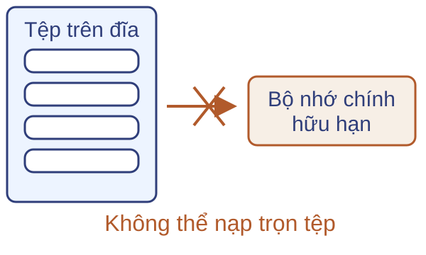
Tệp bản ghi lớn hơn bộ nhớ thì không nạp trọn để cộng một lần.
Bài toán dữ liệu
Định nghĩa. Bài toán dữ liệu (Định nghĩa 01.1) gồm:
- Miền đầu vào $\mathcal I$: các đầu vào hợp lệ; mỗi $I\in\mathcal I$ là một thể hiện (instance).
- Quan hệ đầu vào–đầu ra: tập $\mathrm{Out}(I)$; thuật toán đúng khi trên mọi $I$ dừng và trả phần tử của $\mathrm{Out}(I)$.
- Ngân sách tài nguyên: bộ nhớ $M$ khối, số lượt đọc, dữ liệu truyền, dung lượng.
Ví dụ. Bốn dòng: $\mathrm{Out}(I)=\{(\text{a.vn},55),(\text{b.vn},25),(\text{c.vn},0)\}$.
Đếm số lần xuất hiện của từng từ
Đầu vào: kho tài liệu chia trên nhiều máy.
Đầu ra: số lần xuất hiện trong toàn kho của mỗi từ $w$.
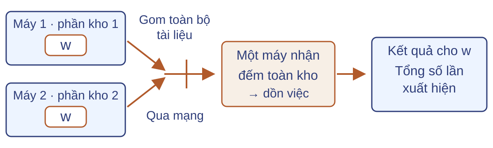
Gom cả kho về một máy tốn đường truyền và dồn việc vào máy đó.
Tính điểm quan trọng của trang web
Đầu vào: đồ thị liên kết có hướng giữa các trang web.
Đầu ra: một điểm quan trọng cho mỗi trang, dùng để sắp kết quả tìm kiếm.
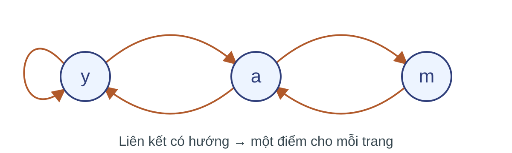
Mỗi vòng đọc mọi liên kết; ma trận đặc cho mọi cặp trang lãng phí khi đồ thị thưa.
Ưu tiên kết quả tìm kiếm theo chủ đề
Đầu vào: đồ thị liên kết và một chủ đề cần ưu tiên, như ô tô cho truy vấn “Jaguar”.
Đầu ra: điểm có xét chủ đề, ưu tiên các trang về xe.
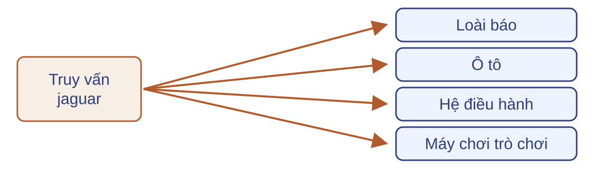
Không lưu được một véc-tơ điểm nhiều tỷ phần tử cho mỗi người trong một tỷ người.
Hạn chế liên kết rác trong xếp hạng
Đầu vào: đồ thị có các trang do một bên tạo rác kiểm soát, cùng trỏ tới một trang đích.
Đầu ra: điểm hạng ít bị các trang đó đẩy lên.
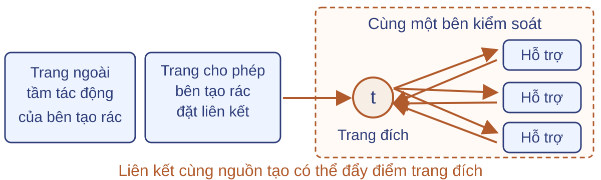
Nhiều liên kết tới một trang không chứng tỏ nhiều nguồn độc lập.
Tìm các cặp tài liệu gần trùng
Đầu vào: $N$ tài liệu của kho web và ngưỡng $\tau$.
Đầu ra: mọi cặp tài liệu có độ tương đồng đạt ngưỡng $\tau$.
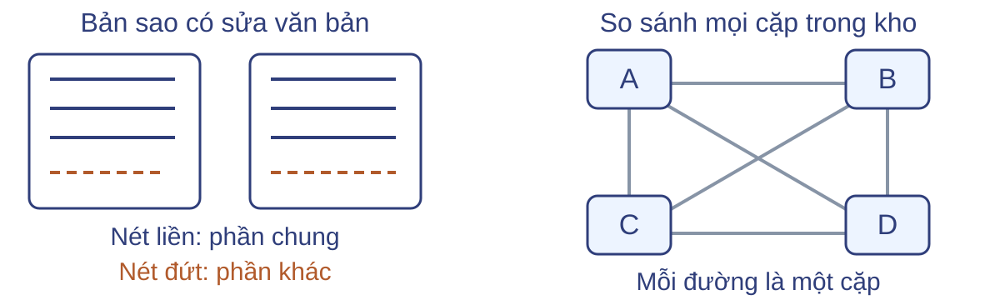
Với $N=10^6$ tài liệu, xét mọi cặp phải kiểm $\binom N2=499\,999\,500\,000$ cặp.
Tìm đoạn tài liệu bằng véc-tơ truy vấn
Đầu vào: $n$ véc-tơ (vector) của các đoạn tài liệu, véc-tơ truy vấn $\mathbf y$ cùng số chiều.
Đầu ra: $k$ đoạn có véc-tơ gần $\mathbf y$ nhất theo khoảng cách đã chọn.
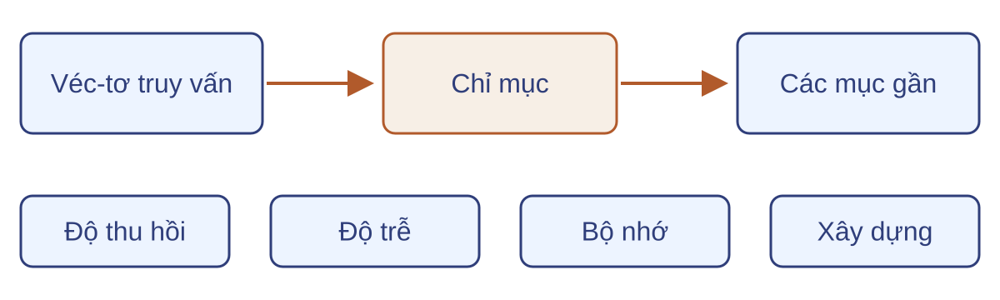
Kho $10^{10}$ véc-tơ 3072 chiều: quét hết cần $10^{10}$ phép tính khoảng cách mỗi truy vấn.
Tập $k$ hàng xóm gần nhất chính xác
Định nghĩa. Kho $\mathbf x_1,\ldots,\mathbf x_n\in\mathbb R^D$, truy vấn $\mathbf y$, khoảng cách $d$, $1\le k\le n$.
Sắp các chỉ số $i$ theo cặp $(d(\mathbf x_i,\mathbf y),\,i)$ tăng dần; $\mathcal N_k(\mathbf y)$ là $k$ chỉ số đứng đầu (Định nghĩa 01.2).
Ví dụ. $n=3$, $k=1$, $d(\mathbf x_1,\mathbf y)=d(\mathbf x_2,\mathbf y)=1<d(\mathbf x_3,\mathbf y)$.
Thiếu quy tắc phá hòa thì $\{1\}$ và $\{2\}$ cùng gần nhất; quy tắc trên cho $\mathcal N_1(\mathbf y)=\{1\}$.
Câu hỏi về bảy bài toán trên kho web
Câu hỏi: nêu đầu vào, đầu ra và trở ngại của cách làm trực tiếp theo Định nghĩa 01.1.
- Tổng kích thước theo máy chủ khi tệp bản ghi lớn hơn bộ nhớ.
- Mọi cặp gần trùng trong $10^6$ tài liệu.
- $k$ đoạn gần một véc-tơ truy vấn trong kho $10^{10}$ véc-tơ.
2.Dòng dữ liệu, nén và truy vấn trên đĩa
Muốn tiếp nhận, lưu và khai thác dữ liệu lớn, phải tính đến bộ nhớ hữu hạn và chi phí đọc đĩa.
Khối và lượt quét · Dòng dữ liệu · Nén văn bản và ảnh · Chỉ mục băm · Sắp, tra, nối
Tệp 1 TB và bộ nhớ 1 GB
Nhu cầu: tệp 1 TB trên đĩa, bộ nhớ chính 1 GB: một phần nghìn tệp.
- Dữ liệu đang đến: trạng thái giữ trong bộ nhớ.
- Dữ liệu cần nén: dung lượng lưu.
- Dữ liệu trên đĩa: số khối đọc khi sắp, tra, nối.
Mọi cách xử lý đều đọc tệp từng phần: cần một đơn vị đo đọc ghi.
Khối, lần truyền khối và lượt quét
Định nghĩa. Khối (block) là đơn vị chuyển giữa đĩa và bộ nhớ; tệp chiếm $F$ khối, bộ nhớ chứa $M$ khối.
- Lần truyền khối (block transfer): đọc hoặc ghi một khối.
- Lượt quét (pass): đọc mỗi khối của tệp đúng một lần.
- Mô hình chi phí đọc ghi: tổng số lần truyền khối (Định nghĩa 01.4).
Ví dụ: tệp 1 TB
Giả thiết: khối $65\,536$ byte, truyền tối đa $10^8$ byte/giây, mỗi truy cập riêng khoảng 10 mili giây.
Tính $F$ và thời gian đọc tệp $10^{12}$ byte.
$F=\lceil10^{12}/65\,536\rceil=\lceil15\,258\,789{,}0625\rceil=15\,258\,790$
Đọc tuần tự: $10^{12}/10^8=10^4$ giây, khoảng $2{,}78$ giờ.
Đọc mỗi khối bằng một truy cập riêng: $15\,258\,790\cdot0{,}01=152\,587{,}9$ giây, khoảng $1{,}77$ ngày.
Kết luận: cùng $F$ lần truyền khối, hai cách đọc chênh khoảng 15 lần thời gian.
Chi phí của lượt quét
Mệnh đề. Tệp $F$ khối; trước mỗi lượt, không khối nào nằm sẵn trong bộ nhớ.
Mỗi lượt đọc mỗi khối đúng một lần; nếu ghi, ghi $F$ khối, mỗi khối một lần.
- (a) Một lượt chỉ đọc tốn đúng $F$ lần truyền khối.
- (b) Một lượt đọc và ghi lại tốn $2F$.
- (c) $m$ lượt như (b) tốn $2mF$ (Mệnh đề 01.5).
Giữ mẫu truy vấn và lọc thư đến
Đầu vào: bản ghi (user, query, time); thư đến kèm địa chỉ gửi.
Đầu ra: tỷ lệ truy vấn lặp của mỗi người; nhận thư khi địa chỉ thuộc danh sách cho phép.
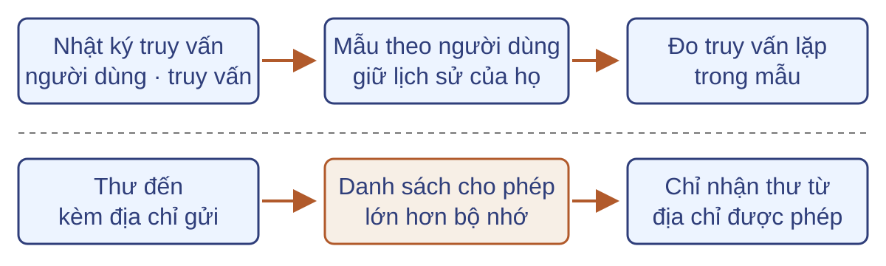
Chỉ được lưu $1/10$ số bản ghi; danh sách $10^9$ địa chỉ chiếm từ 20 GB, bộ nhớ 1 GB.
Ví dụ: mẫu theo từng truy vấn
Một người dùng: $\mu_1$ truy vấn đúng một lần, $\mu_2$ đúng hai lần; giữ độc lập mỗi bản ghi với xác suất $1/10$.
Tính tỷ số truy vấn lặp trên mẫu.
Tỷ lệ cần đo là $\mu_2/(\mu_1+\mu_2)$; truy vấn lặp còn đủ hai lần với xác suất $1/100$, một lần với xác suất $18/100$.
$\dfrac{\mu_2/100}{\mu_2/100+\mu_1/10+18\mu_2/100}=\dfrac{\mu_2}{10\mu_1+19\mu_2}$
Kết luận: $\mu_1=\mu_2=10$ cho $1/29$ trên mẫu, trong khi tỷ lệ đúng là $1/2$.
Đếm người dùng và lần truy cập gần đây
Đầu vào: nhật ký truy cập, mỗi lần truy cập có mã người dùng và thời điểm.
Đầu ra: số người dùng khác nhau; số lần truy cập trong cửa sổ (window) gần nhất.
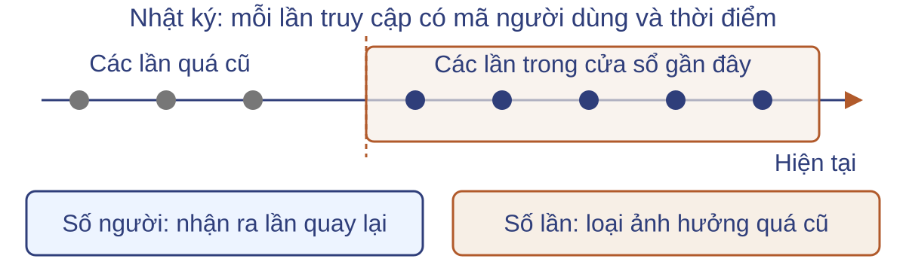
Mọi mã người dùng có thể vượt bộ nhớ; bộ đếm tổng không biết lần nào ra khỏi cửa sổ.
Nén dữ liệu để lưu và khôi phục
Nhu cầu: lưu dữ liệu để đọc lại; số đếm không dựng lại được nhật ký.
Định nghĩa. Bộ nén gồm bộ mã hóa $\mathrm{enc}$ và bộ giải mã $\mathrm{dec}$ (Định nghĩa 01.7).
- Không mất thông tin (lossless): $\mathrm{dec}(\mathrm{enc}(x))=x$ với mọi $x$.
- Có mất thông tin (lossy): $\mathrm{dec}(\mathrm{enc}(x))$ đạt tiêu chí chất lượng cho trước.
- Dung lượng: $\mathrm{enc}(x)$ cùng thông tin giải mã phải lưu.
Lưu văn bản với ít dung lượng hơn
Đầu vào: tệp văn bản, ví dụ chuỗi aabaacabcabcb gồm 13 ký tự.
Đầu ra: dữ liệu mã và thông tin giải mã khôi phục đúng chuỗi gốc.
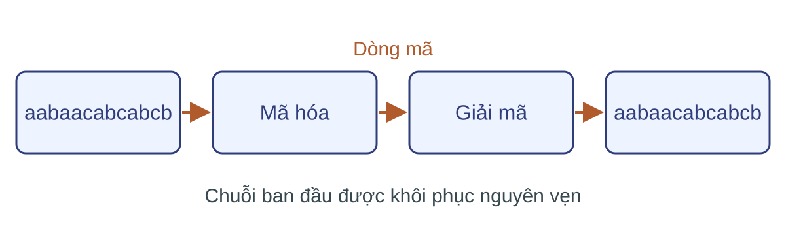
Mã và thông tin giải mã đều chiếm dung lượng.
Giảm dung lượng ảnh với sai số cho phép
Đầu vào: ảnh và tiêu chí chất lượng ứng dụng yêu cầu.
Đầu ra: mã ảnh nhỏ hơn; ảnh khôi phục đạt tiêu chí ấy.
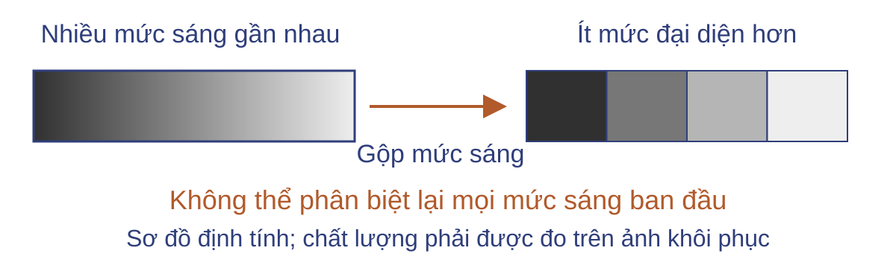
Phải báo cùng lúc dung lượng mã và sai khác của ảnh khôi phục.
Xử lý và truy vấn dữ liệu trên đĩa
Nhắc lại: chi phí trên đĩa là số lần truyền khối (Định nghĩa 01.4).
- Sắp xếp: trả đủ bản ghi theo khóa tăng dần, kể cả khóa lặp.
- Tra cứu: trả mọi bản ghi thỏa điều kiện, không quét cả tệp.
- Nối: ghép hai bảng theo thuộc tính chung.
Tệp $F$ khối lớn hơn bộ nhớ $M$ khối: xử lý từng phần.
Sắp xếp tệp lớn theo khóa
Đầu vào: tệp bản ghi chưa có thứ tự, lớn hơn bộ nhớ.
Đầu ra: tệp gồm đủ các bản ghi ấy theo khóa tăng dần, kể cả khóa lặp.
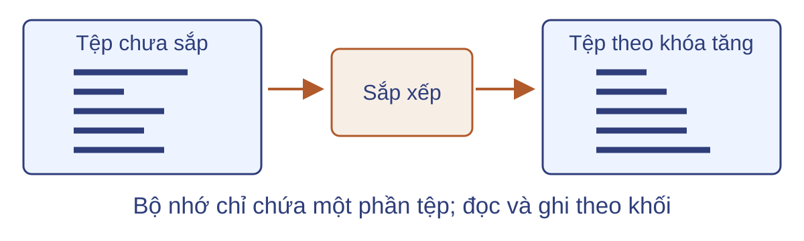
Đọc và ghi lại tệp nhiều lần làm tăng chi phí dù số phép so sánh ít.
Tìm hồ sơ giảng viên theo mã hoặc lương
Đầu vào: bảng hồ sơ giảng viên; một mã, hoặc một khoảng lương.
Đầu ra: mọi hồ sơ có mã đã cho, hoặc có lương trong khoảng.
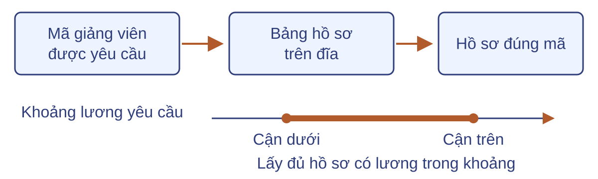
Quét cả bảng cho mỗi yêu cầu đọc nhiều dữ liệu thừa.
Hàm băm và chỉ mục băm
Định nghĩa. Hàm băm (hash function) $h$ đưa khóa về số thùng $h(x)\in\{0,\ldots,B-1\}$ (Định nghĩa 01.8).
Chỉ mục (index) trên một trường lấy mọi bản ghi có giá trị $v$ mà không đọc cả tệp.
Chỉ mục băm đặt bản ghi vào thùng $h(\text{khóa})$; tìm khóa $v$ chỉ duyệt thùng $h(v)$.
Ví dụ. 800-555-1212 vào thùng 17: duyệt thùng 17, loại bản ghi có số khác.
Tìm tài liệu chứa đồng thời hai từ khóa
Đầu vào: kho tài liệu và hai từ khóa.
Đầu ra: mọi tài liệu chứa cả hai từ.
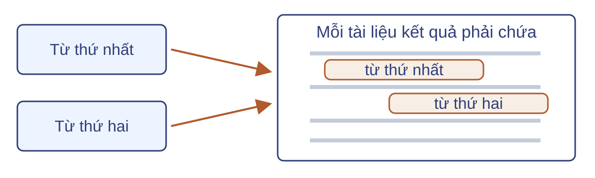
Đọc từng tài liệu cho mỗi truy vấn lặp lại công việc trên cả kho.
Tìm đối tượng giao vùng trên bản đồ
Đầu vào: các đối tượng hình học và một vùng bản đồ.
Đầu ra: các đối tượng nằm một phần hoặc toàn bộ trong vùng.
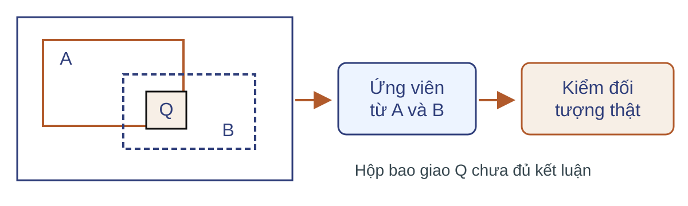
Hộp bao giao vùng chỉ cho ứng viên; vẫn phải kiểm hình thật.
Ghép sinh viên với các môn đã đăng ký
Đầu vào: bảng student 100 khối, bảng takes 400 khối; bộ nhớ $M=20$ khối.
Đầu ra: mọi cặp hồ sơ sinh viên và bản ghi đăng ký cùng mã sinh viên.
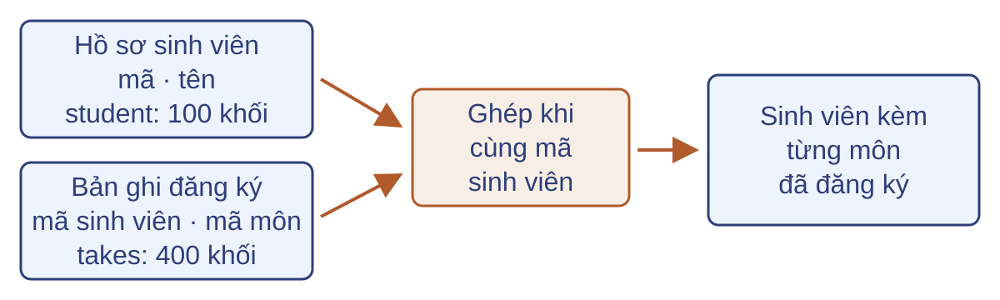
Quét lại bảng đăng ký cho từng sinh viên đọc cùng dữ liệu nhiều lần.
Câu hỏi về dòng, nén và truy vấn trên đĩa
Câu hỏi:
- Giải thích vì sao một số đếm người dùng khác nhau không thay được bản nén của nhật ký.
- Hai bảng 100 và 400 khối, bộ nhớ 20 khối: nêu việc không làm được, vì sao quét lại tốn khối.
- Nén ảnh có mất thông tin: nêu hai đại lượng phải báo cùng nhau.
3.Đặc tả và đánh giá thuật toán
Muốn chọn lời giải cho bài toán tìm cặp gần trùng, phải đặc tả đầu ra rồi xét tính đúng và chi phí.
Độ tương đồng Jaccard · Đặc tả và tính đúng · Mô hình chi phí · Xét mọi cặp · Xác minh ứng viên
Phân tích thuật toán xử lý dữ liệu lớn
Bài toán phân tích: tìm cặp tài liệu gần trùng trong kho $N=10^6$ tài liệu.
Đặc tả
Độ đo gần trùng và tập kết quả chính xác.
Đánh giá
Tính đúng; chi phí theo một mô hình đã nêu.
Bài toán tìm cặp tài liệu gần trùng
Nhu cầu: nhận ra trang sao sang máy chủ khác, chỉ đổi thông tin máy chủ.
So từng ký tự chỉ nhận ra hai tài liệu giống hệt.
Biểu diễn tài liệu bằng tập đoạn ký tự (shingle) liên tiếp, cùng độ dài.
Đầu ra: các cặp có phần chung đủ lớn; độ đo và ngưỡng chốt “đủ lớn”.
Độ tương đồng Jaccard
Ví dụ. $C_1$, $C_2$: hai phần tử chỉ thuộc $C_1$, ba chung, ba chỉ thuộc $C_2$.
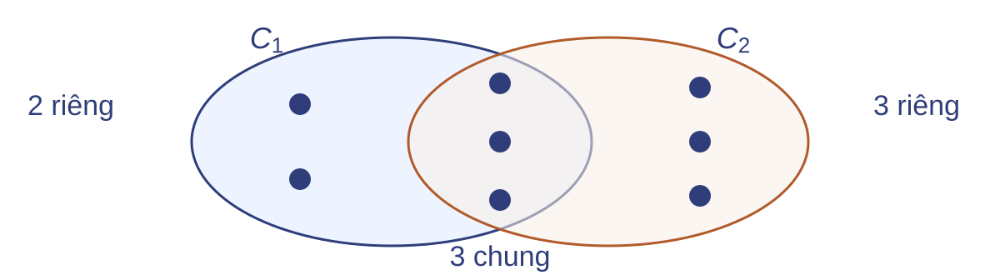
Định nghĩa. Với tập hữu hạn $C,C'$, $C\cup C'\ne\varnothing$, độ tương đồng Jaccard là $\mathrm{SIM}(C,C')=|C\cap C'|/|C\cup C'|$ (Định nghĩa 01.9).
Kết luận: $\mathrm{SIM}(C_1,C_2)=3/8$; cặp đạt ngưỡng khi và chỉ khi $\tau\le3/8$.
Đặc tả tìm cặp gần trùng
Đầu vào: $N\ge0$; tập hữu hạn, không rỗng $C_1,\ldots,C_N$; ngưỡng $\tau\in[0,1]$.
Đầu ra: tập (Định nghĩa 01.10)
$R=\{(i,j):1\le i<j\le N,\ \mathrm{SIM}(C_i,C_j)\ge\tau\}$
Mỗi cặp của $R$ xuất đúng một lần; thứ tự xuất không quy định.
Trường hợp biên: $N<2$ cho $R=\varnothing$.
Ví dụ: thứ tự xét cặp
Tính thứ tự các cặp của hai vòng lặp $i<j$ với $N=4$.
Vòng ngoài $i=1,2,3$; vòng trong $j=i+1,\ldots,4$.
$(1,2),\ (1,3),\ (1,4),\ (2,3),\ (2,4),\ (3,4)$
Kết luận: $3+2+1=6=\binom42$ cặp, mỗi cặp $i<j$ đúng một vòng.
Ví dụ: thứ tự xét cặp, vết chạy với $N=3$
$C_1$, $C_2$ của ví dụ Jaccard, $C_3=C_1$, $\tau=1/2$. Tính kết quả sau mỗi vòng.
| Vòng | Cặp | $\mathrm{SIM}$ | So với $\tau=1/2$ | Kết quả sau vòng |
|---|
| 0 | | | | $\varnothing$ |
| 1 | $(1,2)$ | $3/8$ | nhỏ hơn, không xuất | $\varnothing$ |
| 2 | $(1,3)$ | $1$ | không nhỏ hơn, xuất | $\{(1,3)\}$ |
| 3 | $(2,3)$ | $3/8$ | nhỏ hơn, không xuất | $\{(1,3)\}$ |
Kết luận: $R=\{(1,3)\}$, đúng đặc tả; sau vòng 3 hai vòng lặp đều hết.
Thuật toán: xét mọi cặp
Đầu vào: $N$, $C_1,\ldots,C_N$, $\tau$ như đặc tả. Đầu ra: các cặp của $R$, xuất dần (Thuật toán 01.11).
1 nếu N < 2: kết thúc với kết quả rỗng
2 cho i = 1,...,N−1:
3 cho j = i+1,...,N:
4 tính chính xác SIM(Cᵢ, Cⱼ)
5 nếu SIM(Cᵢ, Cⱼ) ≥ τ: xuất cặp (i, j)
Phép quyết định ở dòng 5; cách tính $\mathrm{SIM}$ ở dòng 4 còn để mở.
Câu hỏi: nếu vòng trong bắt đầu từ $j=1$, xác định phần đặc tả bị vi phạm.
Tính đúng: bất biến của xét mọi cặp
Mệnh đề. Đầu vào hợp lệ, phép kiểm $\mathrm{SIM}\ge\tau$ chính xác.
Thuật toán dừng sau $\binom N2$ vòng, xuất đúng $R$, mỗi cặp một lần (Mệnh đề 01.12).
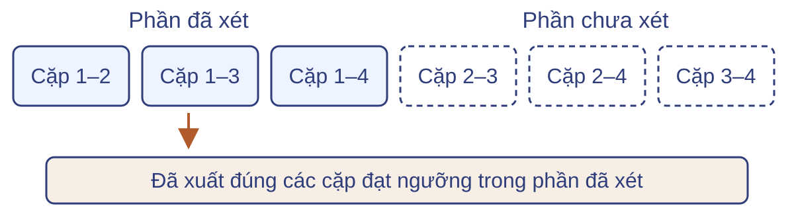
Bất biến: sau $\ell$ vòng, $\mathcal O_\ell=R\cap\mathcal S_\ell$, mỗi cặp của $\mathcal O_\ell$ xuất đúng một lần.
Tính đúng: khởi tạo, duy trì, kết thúc
| Bước | Lập luận |
|---|
| Mỗi cặp một vòng | $1\le i\le N-1$, $i+1\le j\le N$ tương đương $1\le i<j\le N$ |
| Khởi tạo | $\mathcal S_0=\mathcal O_0=\varnothing$ |
| Duy trì | cặp mới $(i,j)\notin\mathcal S_\ell$; xuất khi và chỉ khi $(i,j)\in R$ |
| Kết thúc | sau $\binom N2$ vòng, $\mathcal S_\ell$ là toàn miền nên $\mathcal O_\ell=R$ |
Điều kiện dừng: số vòng $\sum_{i=1}^{N-1}(N-i)=\binom N2$ hữu hạn.
Trường hợp biên: $N<2$ trả rỗng ở dòng 1, đúng $R=\varnothing$.
Một triệu chữ ký trong bộ nhớ
Kho $10^6$ tài liệu, mỗi tài liệu một chữ ký (signature) 1000 byte; so một cặp mất 1 micro giây.
- Bộ nhớ: $10^6\cdot1000=10^9$ byte, vừa bộ nhớ chính.
- Đọc ghi: $F=\lceil10^9/65\,536\rceil=15\,259$ khối, một lượt quét.
- Tính toán: $\binom{10^6}{2}\cdot10^{-6}=499\,999{,}5$ giây $\approx5{,}79$ ngày.
Giới hạn nằm ở khối lượng tính toán; muốn giảm phải kiểm ít cặp hơn.
Các tiêu chí đánh giá
Định nghĩa. Mô hình chi phí chọn một đại lượng và một đơn vị đếm (Định nghĩa 01.13).
| Nhóm | Đại lượng |
|---|
| Kết quả | tính đúng; chất lượng khi cho phép gần đúng |
| Tài nguyên khi chạy | khối lượng tính toán; bộ nhớ làm việc |
| Tài nguyên dữ liệu | đọc ghi và lượt quét; dữ liệu mạng; dung lượng lưu trữ |
| Vận hành | độ trễ truy vấn; chi phí xây dựng; chi phí cập nhật |
Bộ nhớ làm việc
Bộ nhớ làm việc là dung lượng lớn nhất giữ đồng thời: trạng thái, dữ liệu đang dùng, bộ đệm.
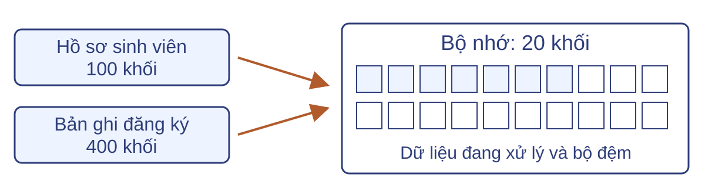
Bảng 100 hoặc 400 khối không vừa 20 khối; phải xử lý từng phần, chừa chỗ bộ đệm.
Đọc ghi và số lượt quét
Nhắc lại: lượt chỉ đọc tốn $F$, đọc và ghi $2F$, $m$ lượt $2mF$ lần truyền khối (Mệnh đề 01.5).
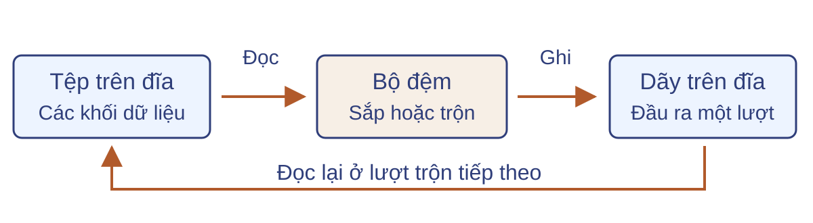
Ít phép so sánh chưa bảo đảm ít lần truyền khối.
Dữ liệu truyền qua mạng
Dữ liệu mạng là lượng dữ liệu trao đổi giữa các máy để hoàn thành tác vụ.
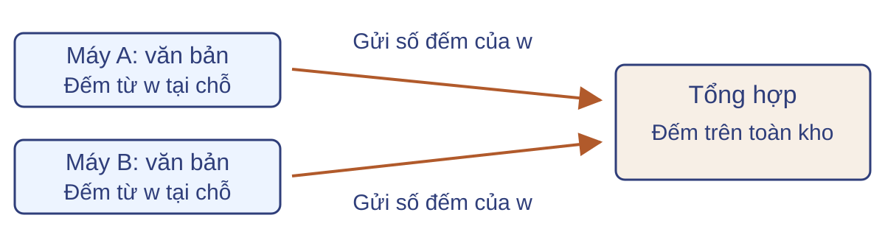
Chi phí truyền thông (communication cost) theo CS246: kích thước đầu vào,
cộng hai lần dữ liệu chuyển từ Map sang Reduce, cộng đầu ra của Reduce.
Chi phí này được tính riêng với chi phí tính toán.
Độ trễ truy vấn
Độ trễ là thời gian từ lúc nhận một truy vấn tới lúc trả kết quả.
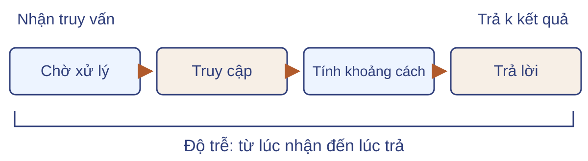
Độ trễ (latency) khác thông lượng (throughput), số truy vấn hoàn tất mỗi đơn vị thời gian.
Chi phí xây dựng chỉ mục
Chi phí xây dựng là thời gian và bộ nhớ để tạo một cấu trúc trước khi trả truy vấn.
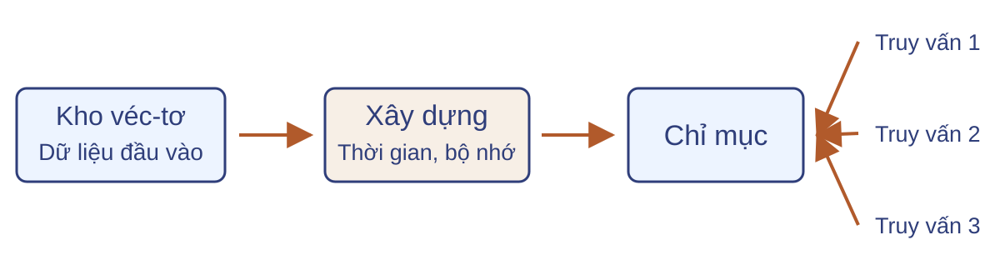
Báo chi phí xây dựng cùng độ trễ truy vấn.
Chi phí cập nhật dữ liệu
Chi phí cập nhật là công việc đưa một thay đổi vào dữ liệu gốc và cấu trúc phụ thuộc.
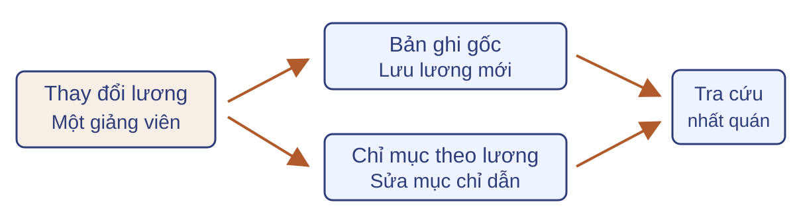
Sửa bản ghi mà không sửa chỉ mục theo lương thì truy vấn khoảng trả mục cũ.
Dung lượng lưu trữ
Dung lượng lưu trữ gồm dữ liệu đã lưu và phần phụ trợ: thông tin giải mã, chỉ mục.
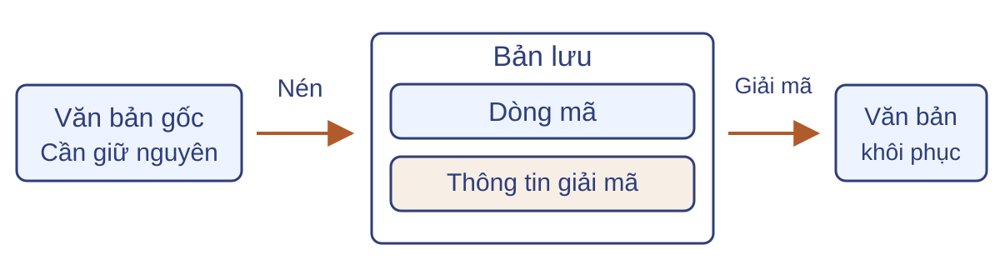
Nén văn bản phải tính cả mã và thông tin giải mã; bản khôi phục bằng văn bản gốc.
Thủ tục trộn đếm giao và hợp
Danh sách tăng ngặt $C$, $C'$; hai con trỏ ở đầu, $\gamma=0$.
Lặp khi cả hai con trỏ chưa hết danh sách; so $w$, $w'$ đang trỏ:
- $w=w'$: tăng $\gamma$, tiến cả hai con trỏ;
- $w<w'$: tiến con trỏ trên $C$; $w>w'$: tiến con trỏ trên $C'$.
Bổ đề. Thủ tục dừng sau không quá $|C|+|C'|$ phép so sánh, $\gamma=|C\cap C'|$ và $|C\cup C'|=|C|+|C'|-\gamma$ (Bổ đề 01.14).
Chi phí: xét mọi cặp
Mô hình: đếm phép so sánh phần tử; mọi $C_i$ trong bộ nhớ, danh sách tăng ngặt, tối đa $L$ phần tử.
| Bước | Số lần | Chi phí mỗi lần | Đóng góp |
|---|
| Kiểm $N<2$ (dòng 1) | $1$ | $O(1)$ | $O(1)$ |
| Trộn hai danh sách (dòng 4) | $\binom N2$ | $\le2L$ phép so sánh | $\le N(N-1)L$ |
| So $\gamma c\ge a(|C_i|+|C_j|-\gamma)$ (dòng 5) | $\binom N2$ | $O(1)$ | $O(N^2)$ |
| Xuất một cặp (dòng 5) | $|R|$ | $O(1)$ | $O(|R|)$ |
Mệnh đề. Phần xét cặp dùng không quá $\binom N2\cdot2L=N(N-1)L$ phép so sánh, tức $O(N^2L)$ (Mệnh đề 01.15).
$N=10^6$: $499\,999\,500\,000$ vòng; $N$ gấp đôi thì số vòng tăng $\approx4{,}000002$ lần.
Cặp ứng viên và bước xác minh
Cặp ứng viên (candidate pair): cặp của tập $A$ chọn trước, $|A|$ nhỏ hơn nhiều so với $\binom N2$.
Xác minh (verification): tính $\mathrm{SIM}$ chính xác chỉ trên các cặp của $A$.
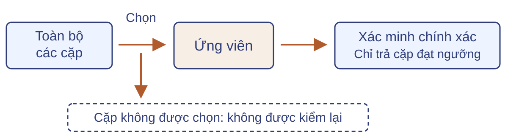
Câu hỏi: xác định bước xác minh có bảo đảm trả mọi cặp đạt ngưỡng không.
Xác minh ứng viên
Mệnh đề. $A$ là tập cặp $(i,j)$ bất kỳ với $1\le i<j\le N$; xác minh chính xác trả tập $\widehat R$ các cặp của $A$ đạt ngưỡng.
- (a) $\widehat R=A\cap R$.
- (b) $\widehat R\subseteq R$: mọi cặp được trả đều đạt ngưỡng.
- (c) $\widehat R=R$ khi và chỉ khi $R\subseteq A$ (Mệnh đề 01.16).
Chứng minh. $(i,j)\in\widehat R\iff(i,j)\in A$ và $\mathrm{SIM}(C_i,C_j)\ge\tau$, tức $(i,j)\in A\cap R$; (b), (c) suy từ (a). $\square$
Ví dụ: một cặp sai bị loại, một cặp đúng bị bỏ sót
$N=3$, $R=\{(1,2),(2,3)\}$, tập ứng viên $A=\{(1,2),(1,3)\}$. Tính $\widehat R$ và độ thu hồi.
Xác minh: $(1,2)$ đạt ngưỡng, được trả; $(1,3)$ không đạt, bị loại; $\widehat R=\{(1,2)\}$.
Dương giả (false positive, FP), còn gọi là ứng viên giả: $(1,3)$, bị bước xác minh loại.
Âm giả (false negative, FN), còn gọi là cặp bỏ sót: $(2,3)\notin A$, không bước nào tìm lại.
Kết luận: độ thu hồi (recall) $|\widehat R\cap R|/|R|=1/2$; $R\not\subseteq A$ nên $\widehat R\ne R$.
Chất lượng kết quả gần đúng
Định nghĩa. Phương pháp trả $k$ chỉ số $\widehat{\mathcal N}_k(\mathbf y)$; độ thu hồi tại $k$ là (Định nghĩa 01.17)
$\operatorname{recall@}k(\mathbf y)=\dfrac{|\widehat{\mathcal N}_k(\mathbf y)\cap\mathcal N_k(\mathbf y)|}{k}$
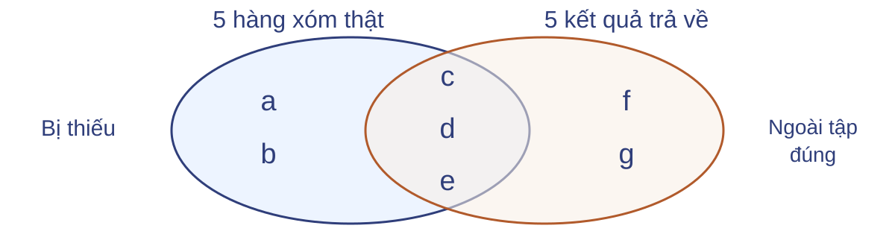
Ví dụ. $\mathcal N_5(\mathbf y)=\{\mathrm a,\ldots,\mathrm e\}$, $\widehat{\mathcal N}_5(\mathbf y)=\{\mathrm c,\ldots,\mathrm g\}$: $\operatorname{recall@}5(\mathbf y)=3/5$.
Kết luận: hai kết quả $\mathrm f,\mathrm g$ không bù được hai hàng xóm thật $\mathrm a,\mathrm b$ bị thiếu.
4.Năm nhóm thuật toán và cách học
Muốn biết mỗi bài sau giải giới hạn nào và cần nền gì, phải đối chiếu phương pháp với bài toán đã gặp.
Ba giới hạn · Năm nhóm Bài 02–15 · Kiến thức nền · Sản phẩm học tập · Trách nhiệm dữ liệu
Ba giới hạn và năm nhóm bài
Nhắc lại: ba giới hạn đã gặp.
- $N=10^6$ tài liệu: $499\,999\,500\,000$ cặp phải kiểm.
- Bảng takes 400 khối, bộ nhớ chỉ 20 khối.
- Bản ghi truy vấn và thư đến liên tục, xử lý khi đến.
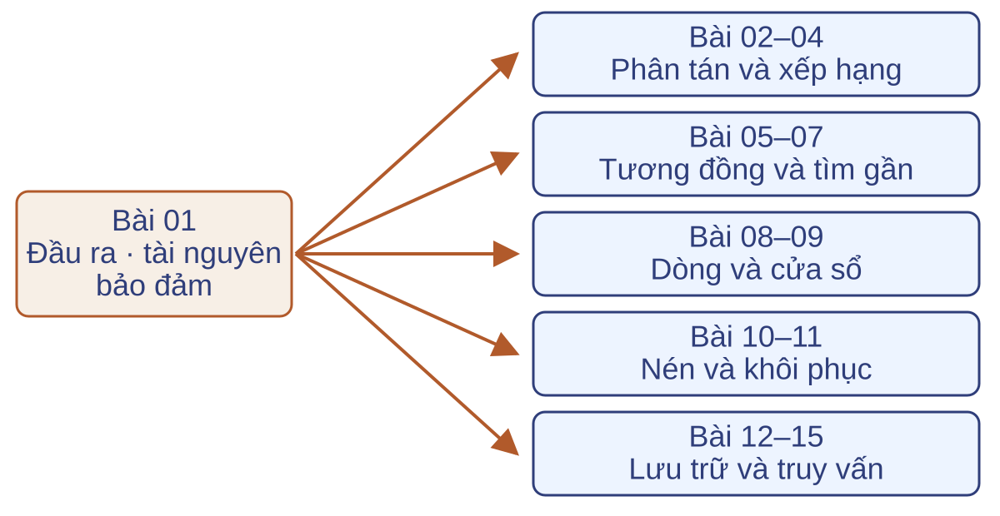
MapReduce: gom kết quả theo khóa
Bài 02: đếm số lần xuất hiện của mỗi từ trong kho trên nhiều máy.
MapReduce tính đóng góp tại nơi lưu dữ liệu rồi gom các đóng góp cùng khóa.
Thuộc tính cần đánh giá: mỗi đóng góp được tính đúng một lần; dữ liệu mạng.
PageRank: tính điểm theo liên kết
Bài 03: mỗi vòng, trang chuyển phần $\beta$ điểm cho các trang nó trỏ tới, phần còn lại chia đều (Định nghĩa 03.8).
Bài 04: PageRank theo chủ đề, TrustRank, khối lượng rác (spam mass), HITS.
Thuộc tính cần đánh giá: điều kiện hội tụ, tiêu chuẩn dừng, chi phí mỗi vòng.
MinHash và LSH: chọn cặp cần đối chiếu
Bài 05: đoạn ký tự, Jaccard, MinHash.
Bài 06: băm nhạy cảm theo tính cục bộ (LSH), phân dải và khuếch đại.
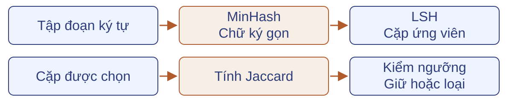
Chữ ký MinHash và LSH tạo tập ứng viên $A$, sau đó xác minh theo Mệnh đề 01.16.
Thuộc tính cần đánh giá: xác suất thành ứng viên, âm giả, số cặp phải xác minh.
Chỉ mục cho truy vấn véc-tơ
Bài 07: $k$ hàng xóm gần đúng, không quét toàn kho.
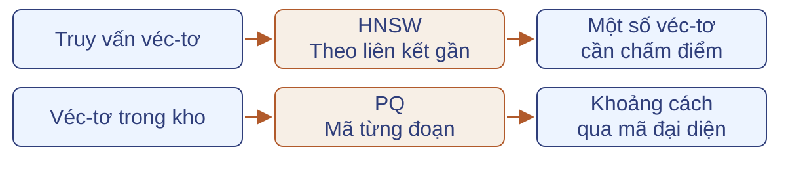
Đồ thị thế giới nhỏ phân tầng (hierarchical navigable small world, HNSW): tìm tham lam từ tầng trên xuống.
Lượng tử hóa tích (product quantization, PQ): mỗi đoạn véc-tơ thay bằng chỉ số tâm con (Định nghĩa 07.27).
Cần đánh giá: độ thu hồi, độ trễ, bộ nhớ, chi phí xây dựng.
Lấy mẫu và lọc trên dòng dữ liệu
Bài 08: giữ một phần lịch sử truy vấn; lọc địa chỉ thư trước khi tra danh sách.
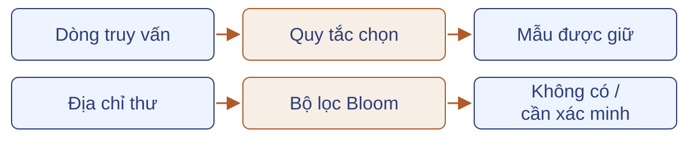
Phương pháp: lấy mẫu theo khóa, lấy mẫu hồ chứa, bộ lọc Bloom.
Bloom: $k$ hàm băm đặt bit; một bit 0 thì trả “chắc chắn không thuộc” (Định nghĩa 08.22).
Thuộc tính cần đánh giá: đơn vị mẫu, trạng thái, sai số một phía.
Cấu trúc gọn cho thống kê dòng
Bài 09: số người dùng khác nhau, số lần truy cập trong cửa sổ, không lưu toàn bộ lịch sử.
Phương pháp: Flajolet–Martin, Count-Min, AMS, DGIM, suy giảm mũ.
Flajolet–Martin giữ độ dài đuôi lớn nhất $R$ của giá trị băm, ước lượng $2^R$ (Định nghĩa 09.5).
Thuộc tính cần đánh giá: đại lượng ước lượng, cửa sổ, sai số, bộ nhớ.
Nén theo ký hiệu, mẫu lặp và ảnh
Huffman ghép hai nút trọng số nhỏ nhất đến khi còn một cây (Thuật toán 10.14).
| Bài | Phương pháp | Thuộc tính cần đánh giá |
|---|
| 10 | Huffman tĩnh, Huffman thích nghi, mã số học | độ dài mã, thông tin giải mã |
| 11 | LZ77, LZ78, LZW; JPEG | khôi phục đúng hoặc sai khác cho phép |
Tổ chức dữ liệu để giảm đọc ghi
| Bài toán đã gặp | Phương pháp |
|---|
| Sắp tệp lớn · Bài 12 | sắp xếp trộn ngoài bộ nhớ, chọn thay thế |
| Tra mã, khoảng lương · Bài 13 | B-Tree, B+-Tree, băm tĩnh, chỉ mục bitmap |
| Từ khóa, vùng bản đồ · Bài 14 | chỉ mục đảo, R-tree, kd-tree, ball tree, Z-order |
| Sinh viên và đăng ký · Bài 15 | nối vòng lặp, nối sắp xếp–trộn, nối băm, Grace Hash |
Sắp, chỉ mục hoặc phân hoạch để mỗi truy vấn đọc ít khối; đo bằng lần truyền khối.
Học phần và năng lực cần đạt
UET.DSE2053 · 3 tín chỉ
| Chuẩn đầu ra | Ví dụ trên bài toán cặp gần trùng |
|---|
| CLO1: diễn giải nguyên lý, thuật toán cơ bản | đặc tả $R$, bất biến của xét mọi cặp |
| CLO2: phân tích bài toán quy mô lớn để chọn kỹ thuật | giới hạn tính toán: $499\,999\,500\,000$ cặp |
| CLO3: thiết kế, triển khai giải pháp | phép so số nguyên với $\tau=a/c$ |
| CLO4: trách nhiệm khi thu thập, xử lý, chia sẻ dữ liệu | báo cáo cả cặp bỏ sót |
Kiến thức nền dùng ở từng nhóm bài
| Nhóm bài | Kiến thức được dùng vào việc gì |
|---|
| Phân tán và xếp hạng | khóa–giá trị để gom; đồ thị, ma trận để truyền điểm |
| Tương đồng và tìm gần | tập hợp cho Jaccard; véc-tơ, khoảng cách |
| Dòng và cửa sổ | xác suất, kỳ vọng cho mẫu và ước lượng |
| Nén và khôi phục | cây, phân phối ký hiệu; chuỗi, từ điển |
| Lưu trữ và truy vấn | bản ghi, khối, cây, băm để tổ chức truy cập |
Sản phẩm khi phân tích thuật toán
Với bài toán cặp gần trùng, mỗi kỹ năng có một sản phẩm kiểm tra được.
| Kỹ năng | Sản phẩm trên ví dụ đã học |
|---|
| Đặc tả | tập $R$ đúng và đủ, mỗi cặp một lần |
| Chạy tay | vết $N=3$, $\tau=1/2$: $R=\{(1,3)\}$ |
| Chứng minh | bất biến khởi tạo, duy trì, cho kết quả khi dừng |
| Phân tích chi phí | bảng bước, số lần, chi phí, đóng góp: $N(N-1)L$ |
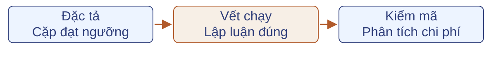
Báo cáo chất lượng và hiệu năng
Nhắc lại: $\operatorname{recall@}5(\mathbf y)=3/5$: năm hàng xóm thật, giữ được ba.
Báo cáo thực nghiệm ghi dữ liệu, tập truy vấn, tập đúng, tham số, thiết bị và cách đo.
Độ thu hồi đi cùng độ trễ và bộ nhớ đo trong cùng điều kiện.
Tự học, hợp tác và trách nhiệm dữ liệu
| Cách làm | Biểu hiện cụ thể trong học phần |
|---|
| Tự học | ôn phần chưa giải thích được |
| Ghi nguồn | nguồn của thuật toán và dữ liệu |
| Làm nhóm | ghi phần đóng góp của từng người |
| Báo cáo trung thực | cả trường hợp bỏ sót và sai số |
| Dùng dữ liệu | chỉ dữ liệu được phép dùng |
Kết luận: $\mathrm{SIM}\ge\tau$ chưa đủ căn cứ kết luận có hành vi sao chép.
Câu hỏi về nhóm bài và kiến thức nền
Câu hỏi:
- Ghép mỗi giới hạn với nhóm bài: $499\,999\,500\,000$ cặp; bảng 400 khối với bộ nhớ 20 khối; bản ghi đến liên tục.
- Nêu đại lượng chính của mỗi giới hạn và một phần kiến thức nền cần ôn cho nhóm đã ghép.
5.Mẫu trùng ngẫu nhiên và suy luận
Đọc thêm Muốn dùng mẫu trùng tìm được làm căn cứ, phải ước lượng số trùng ngẫu nhiên theo mô hình nền.
Hồ sơ lưu trú · Mô hình không phối hợp · Số phép thử · Kỳ vọng · Bất đẳng thức Markov
Tìm mẫu trùng trong hồ sơ lưu trú
Đọc thêm
Nhu cầu: tìm dấu hiệu hoạt động phối hợp từ hồ sơ lưu trú.
Đầu vào: các bản ghi người, ngày, khách sạn.
Mẫu cần tìm: hai người cùng khách sạn trong hai ngày khác nhau.
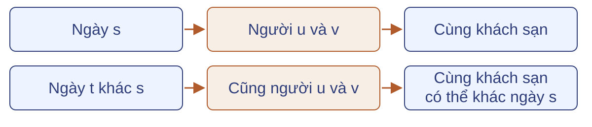
$\binom{10^9}{2}\approx5\times10^{17}$ cặp người: mẫu hiếm ở từng cặp vẫn xuất hiện nhiều lần.
Mô hình lưu trú không phối hợp
Đọc thêm
| Ký hiệu | Giá trị và ý nghĩa |
|---|
| $P$ | $10^9$ người |
| $T$ | $1000$ ngày quan sát |
| $H$ | $10^5$ khách sạn |
| $q$ | $0{,}01$: xác suất một người lưu trú trong một ngày |
Giả thiết: khi đi, mỗi người chọn đều một trong $H$ khách sạn; độc lập giữa người và ngày (Định nghĩa 01.18).
Xác suất trùng một ngày và hai ngày
Đọc thêm
Hai người đều lưu trú
Độc lập giữa hai người: $q^2=(0{,}01)^2=10^{-4}$.
Cùng khách sạn khi đã đi
Người kia chọn trùng với xác suất $1/H$.
Một ngày: $p=q^2/H=10^{-4}/10^5=10^{-9}$.
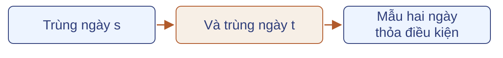
Kết luận: hai ngày khác nhau cho trước: $p^2=10^{-18}$, nhờ độc lập giữa các ngày.
Đơn vị đếm và số phép thử
Đọc thêm
Phép thử là một cặp người cùng một cặp ngày $s\ne t$, đều không xét thứ tự (Định nghĩa 01.19).
Số biến cố trùng $X$ là tổng các chỉ báo $\mathbb 1_e$ trên $\binom P2\binom T2$ phép thử.
Một cặp người trùng ở nhiều cặp ngày góp nhiều biến cố, nên $X$ khác số cặp người.
Kỳ vọng số biến cố trùng
Đọc thêm
Mỗi chỉ báo có $\mathbb E[\mathbb 1_e]=p^2$; kỳ vọng của tổng bằng tổng các kỳ vọng (Mệnh đề 01.20).
$\begin{aligned}\mathbb E[X]&=\binom P2\binom T2p^2\\&=\binom{10^9}{2}\binom{1000}{2}10^{-18}\end{aligned}$
Kết luận: $\mathbb E[X]=249\,749{,}99975025\approx249\,750$ biến cố khi mọi người chọn độc lập.
Bất đẳng thức Markov
Đọc thêm
Bổ đề. $X\ge0$, $\lambda>0$: $\Pr(X\ge\lambda)\le\mathbb E[X]/\lambda$.
Hệ quả. $X$ nguyên không âm thì $\Pr(X\ge1)\le\mathbb E[X]$; cận có ích khi $\mathbb E[X]<1$ (Hệ quả 01.22).
Chứng minh. $\mathbb 1_{\{X\ge1\}}\le X$; lấy kỳ vọng hai vế. $\square$
Hai ngày: $\mathbb E[X]\approx249\,750$, cận không cho thông tin.
Mẫu trùng và căn cứ suy luận
Đọc thêm
| Kết quả đã có | Điều kết luận được |
|---|
| Thuật toán liệt kê đủ mọi mẫu trùng | mọi mẫu trong đầu ra thỏa điều kiện tìm kiếm |
| Mô hình nền cho $\mathbb E[X]\approx249\,750$ | đầu ra có thể chứa rất nhiều mẫu ngẫu nhiên |
| Một cặp người có tên trong đầu ra | cần thêm tỷ lệ nền và mô hình cho cặp phối hợp |
Câu hỏi: liệt kê đủ mọi mẫu trùng có xác nhận giả thiết độc lập không?
7.Bài tập vận dụng
Muốn kiểm mô hình lưu trú, phải đổi quy mô, tiêu chuẩn trùng và đơn vị đếm rồi tính lại kỳ vọng.
Bài tập 01.10 · Bài tập 01.11 · Số phép thử · Kỳ vọng · Kết luận có điều kiện
Mô hình lưu trú và cận xác suất
Nhắc lại:
- $P$ người, $T$ ngày, $H$ khách sạn; mỗi người đi với xác suất $q$, chọn đều; độc lập giữa người và ngày.
- Trùng một ngày $p=q^2/H$; trùng hai ngày $s,t$ cho trước: $p^2$.
- $X$ là tổng chỉ báo trên các phép thử; $\mathbb E[X]$ bằng số phép thử nhân xác suất một phép thử.
- $X$ nguyên không âm thì $\Pr(X\ge1)\le\mathbb E[X]$ (Hệ quả 01.22).
Bài tập: phép đếm và suy luận
Hai bài tập MMDS dùng mô hình nền để đánh giá số mẫu trùng ngẫu nhiên.
| Bài tập | Các bước |
|---|
| 01.10 · MMDS 1.2.1 · Hồ sơ lưu trú | thay quy mô, đổi sang ba ngày |
| 01.11 · MMDS 1.2.2 · Tập mặt hàng | đổi đơn vị đếm, tính trùng ngẫu nhiên, giới hạn kết luận |
Lời giải gồm số phép thử, xác suất, kỳ vọng, cận Hệ quả 01.22 và kết luận kèm giả thiết.
Bài tập: hồ sơ lưu trú, ba biến thể
Câu hỏi: với $P=10^9$, $T=1000$, $H=10^5$, $q=0{,}01$, tính kỳ vọng số biến cố trùng khi áp dụng riêng:
(a) quan sát $2000$ ngày;
(b) quan sát $2\cdot10^9$ người, và vì vậy có $2\cdot10^5$ khách sạn;
(c) chỉ báo khi cùng khách sạn trong ba ngày khác nhau.
Mỗi câu: số phép thử, xác suất một phép thử, kỳ vọng, điều Hệ quả 01.22 cho biết.
Nguồn: MMDS, Bài 1.2.1, §1.2.4, tr.8; Bài tập 01.10.
Bài tập: hồ sơ lưu trú (a), (b)
Câu hỏi: giải riêng (a), (b) của Bài tập 01.10 và nêu điều Hệ quả 01.22 cho biết.
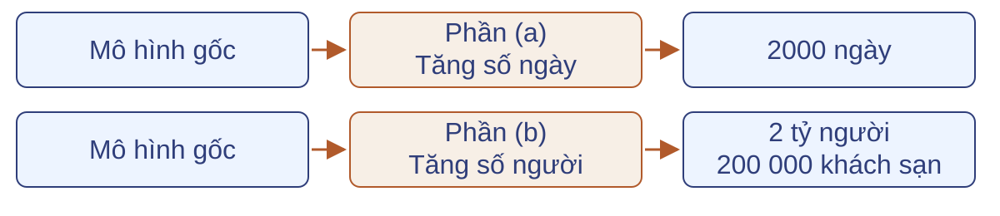
Các tham số không nêu trong từng câu giữ nguyên, gồm $q=0{,}01$.
Lời giải gồm số phép thử, xác suất, kỳ vọng, tỷ lệ với mô hình gốc và cận Hệ quả 01.22.
Nguồn: MMDS, Bài 1.2.1(a, b), tr.8.
Bài tập: hồ sơ lưu trú (a), (b)
Lời giải: (a) $\binom{10^9}{2}\binom{2000}{2}$ phép thử, mỗi phép thử xác suất $p^2=10^{-18}$:
$\mathbb E[X_a]=999\,499{,}9990005\approx999\,500$, gấp $3998/999\approx4{,}002$ lần
(b) $p=10^{-4}/(2\cdot10^5)=5\cdot10^{-10}$, $p^2=2{,}5\cdot10^{-19}$; $\binom{2\cdot10^9}{2}\binom{1000}{2}$ phép thử:
$\mathbb E[X_b]=249\,749{,}999875125\approx249\,750$, gần như không đổi
Cả hai kỳ vọng lớn hơn 1, nên cận $\Pr(X\ge1)\le\mathbb E[X]$ của Hệ quả 01.22 không cho thông tin.
Bài tập: hồ sơ lưu trú (c)
Câu hỏi: giải (c) của Bài tập 01.10 với quy mô gốc và nêu điều Hệ quả 01.22 cho biết.
Chỉ báo cặp nếu cùng khách sạn trong ba ngày khác nhau; khách sạn có thể khác giữa các ngày.
Lời giải gồm đơn vị đếm mới, xác suất một phép thử, kỳ vọng và ý nghĩa kết quả.
Nguồn: MMDS, Bài 1.2.1(c), tr.8.
Bài tập: hồ sơ lưu trú (c)
Lời giải: phép thử là cặp người cùng bộ ba ngày khác nhau; $\binom{1000}{3}=166\,167\,000$.
Theo độc lập giữa ngày, xác suất trùng trong cả ba ngày là $p^3=10^{-27}$.
$\mathbb E[X_c]=\binom{10^9}{2}\binom{1000}{3}10^{-27}=0{,}0830834999169165\approx0{,}0831$
Theo Hệ quả 01.22, $\Pr(X_c\ge1)\le0{,}0831$ trong mô hình không phối hợp.
Xấp xỉ $\binom T3\approx T^3/6$ cho khoảng $0{,}0833$.
Bài tập: cặp người mua cùng tập mặt hàng
$10^8$ người; mỗi người đi siêu thị $100$ lần một năm, mỗi lần mua $10$ trong $1000$ mặt hàng.
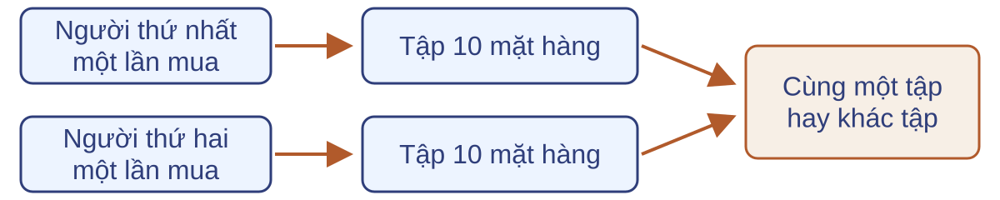
Giả thuyết làm việc: một cặp khủng bố mua đúng cùng một tập 10 mặt hàng vào một lần trong năm.
Câu hỏi: tìm các cặp mua cùng tập, có thể kỳ vọng người tìm được là khủng bố không?
Nguồn: MMDS, Bài 1.2.2, §1.2.4, tr.8; Bài tập 01.11.
Bài tập: tập mặt hàng, đơn vị đếm
| Hồ sơ lưu trú | Tập mặt hàng |
|---|
| cố định một cặp người | cố định một cặp người |
| chọn hai ngày khác nhau | chọn một lần mua của mỗi người |
| trùng khách sạn trong từng ngày | hai tập 10 mặt hàng bằng nhau |
So mọi kết hợp lần mua, không chỉ các lần cùng số thứ tự.
Giả thiết: các lần mua độc lập; mỗi lần chọn đều một tập 10 trong 1000 mặt hàng.
Nguồn: MMDS, Bài 1.2.2, tr.8.
Bài tập: tập mặt hàng, bốn phần lời giải
Câu hỏi: hoàn tất Bài tập 01.11 bằng một lời giải có bốn phần.
- Đếm các cặp lần mua của hai người khác nhau.
- Tính xác suất hai tập mặt hàng trùng nhau.
- Tính kỳ vọng số trùng dưới mô hình nền và cận của Hệ quả 01.22.
- Trả lời theo giả thuyết làm việc và nêu giả thiết mà kết luận cần.
Nguồn: MMDS, Bài 1.2.2, tr.8.
Bài tập: tập mặt hàng, bốn phần lời giải
Lời giải: $\binom{10^8}{2}=4\,999\,999\,950\,000\,000$ cặp người, mỗi cặp $10^4$ cặp lần mua.
Hai tập trùng với xác suất $1/\binom{1000}{10}$, với $\binom{1000}{10}\approx2{,}634\times10^{23}$.
$\mathbb E[Y]=\dfrac{\binom{10^8}{2}\cdot10^4}{\binom{1000}{10}}\approx1{,}90\times10^{-4}$
Theo Hệ quả 01.22, $\Pr(Y\ge1)\le1{,}90\times10^{-4}$: trùng tập mặt hàng hiếm trong mô hình nền.
Xác suất một cặp tìm được là khủng bố cần thêm tỷ lệ nền và mô hình nhóm cần tìm.